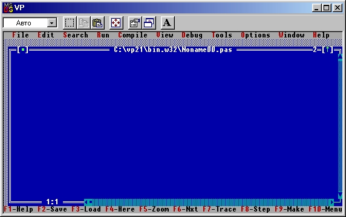

|
|
|
|
Как начать работу с Турбо Паскалем
Система Турбо Паскаль довольна значительна по объему. Она поставляется на нескольких дистрибутивных дискетах и устанавливается на жесткий диск. При развертывании системы на жестком диске обычно создается каталог с именем ТР (или PAS, TURBOPAS, PASCAL и т.п.), в который помещаются все файлы с дистрибутивных дискет. Для вызова Турбо Паскаля необходимо отыскать в древовидной структуре каталогов ПК этот каталог и в нем файл TURBO.EXE. Этот файл содержит готовую к работе диалоговую систему программирования Турбо Паскаль. В него входят минимально необходимые части Турбо Паскаля (текстовый редактор, компилятор, компоновщик, загрузчик). Для нормальной работы в диалоговой среде понадобятся также основная библиотека, располагающаяся в файле TURBO. TPL, и справочная служба (файл TURBO.HLP). В принципе, этих файлов достаточно для написания, компиляции и исполнения большинства примеров, содержащихся в этой книге.
Пусть перечисленные файлы располагаются в каталоге ТР на диске D. Тогда для вызова Турбо Паскаля следует дать команду:
D:\TP\TURBO
По этой команде операционная система MS-DOS поставит на исполнение программу из файла TURBO.EXE: загрузит программу в оперативную память и передаст ей управление.
Не рекомендуется работать с системой, назначив в качестве каталога по умолчанию (текущего каталога) тот, в котором хранятся перечисленные выше файлы (этот каталог будем называть системным). Во-первых, в таком случае можно ошибочно стереть какой-либо из файлов системы программирования и тем самым нарушить ее работоспособность, а во-вторых, этот каталог очень скоро заполнится другими файлами, прямо не относящимися к Турбо Паскалю. Существует и еще одна причина, по которой нежелательно работать в системном каталоге. Дело в том, что Турбо Паскаль имеет свойство запоминать свою настройку в двух файлах с именами TURBO. TP и TURBO.PCK. При вызове система начинает поиск этих файлов в текущем каталоге. Если этот каталог - Ваш индивидуальный, система всякий раз будет настраиваться так, как Вы этого хотите. Если эти файлы не обнаружены в Вашем каталог (а при первом обращении к Турбо Паскалю так оно и будет), система продолжит поиск в системном каталоге, а не найдя их там, настроится стандартным образом. Впоследствии можно сохранить настроечные файлы в своем каталоге и тем самым избавить себя от необходимости перенастройки системы всякий раз при обращении к ней.
После успешного вызова системы экран ПК приобретает вид, показанный на рис. 1.1.

Рис. 1.1. Вид экрана после вызова Турбо Паскаля
Сразу же скажем, что для выхода из Турбо Паскаля следует нажать клавишу Alt и, не отпуская ее, - клавишу с латинской буквой X, после чего можно отпустить обе клавиши.
Верхняя строка содержит «меню» возможных режимов работы Турбо Паскаля, нижняя - краткую справку о назначении основных функциональных клавиш. Вся остальная часть экрана принадлежит окну редактора, очерченному двойной рамкой и предназначенному для ввода и коррекции текстов программ. В его верхней строке приводятся имя того дискового файла, откуда был прочитан текст программы (новому файлу присваивается имя NONAME00.PAS), два специальных поля, используемых при работе с устройством ввода «мышь» (эти поля выделены квадратными скобками), и цифра 1 - номер окна. В Турбо Паскале можно работать одновременно с несколькими программами (или частями одной крупной программы), каждая из которых может располагаться в отдельном окне редактора. Среда позволяет использовать до 9-ти окон редактора одновременно.
Кроме окна (окон) редактора в Турбо Паскале используются также окна отладочного режима, вывода результатов работы программы, справочной службы, стека, регистров. По желанию они могут вызываться на экран поочередно или присутствовать на нем одновременно.
|
|
|
|